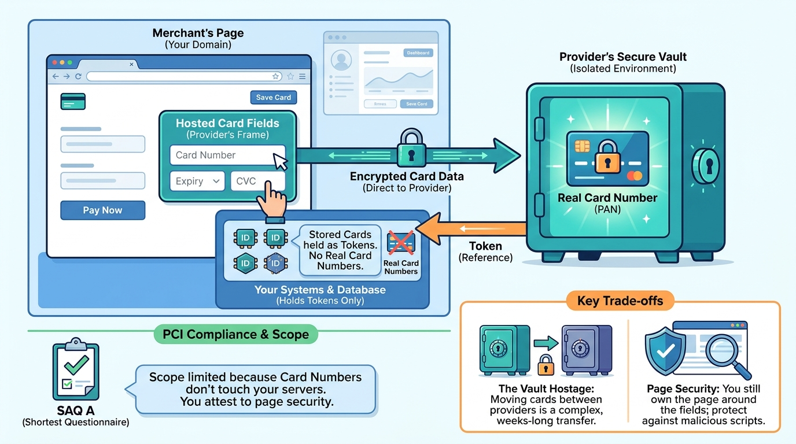

Part V — TRUST: Card Data, Fraud, Authentication and Compliance
Never Touch the Card: Tokenization, Vaults and PCI Scope
AI-assisted: researched and written with Claude Code; illustrations generated with Gemini. How this works

Image generated by Google Gemini (gemini-3-pro-image-preview)